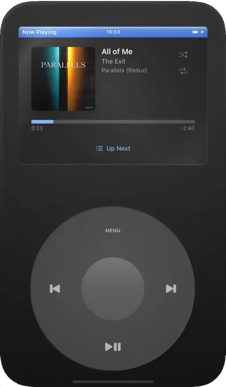

Hi, I'm Josh. Curriculum Developer at CrowdStrike, in Brooklyn.
Building with AI agents, designing how people learn.
Here's what I've made on my own time. Start wherever looks interesting.
Apps

On the App Store
klikWheel
A click-wheel music player for iPhone and iPad, built with Claude Code agents.
Music
Two EPs as The Exit, made with AI. The lyrics are mine.
Learning design
All work →
Lyft · 2025
Manager-Led AI Enablement
A guide for managers leading their teams through AI adoption.
Case study → Lyft · 2025Performance Feedback Redesign
An A/B test of two feedback formats with 169 people.
Case study → Lyft · 2023 to 2024Team Effectiveness Assessment
A manual survey process automated into one form submission.
Case study →